🎨 Projets UX/UI – Figma
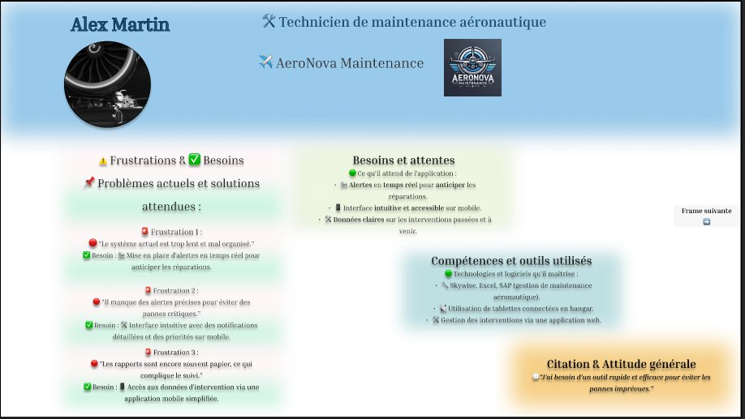
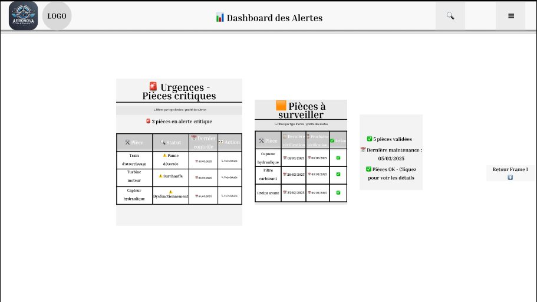
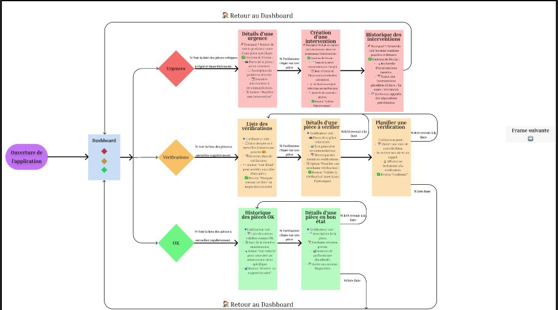
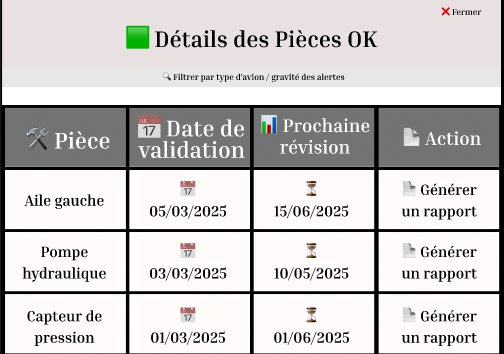
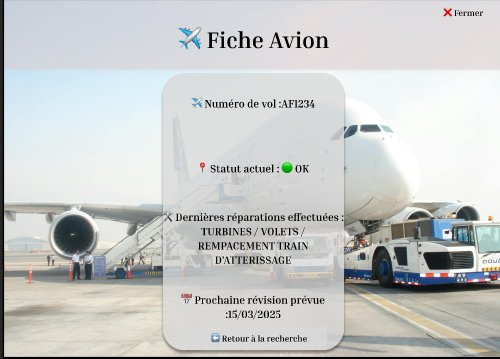
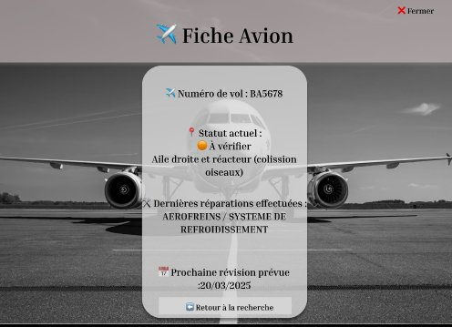
 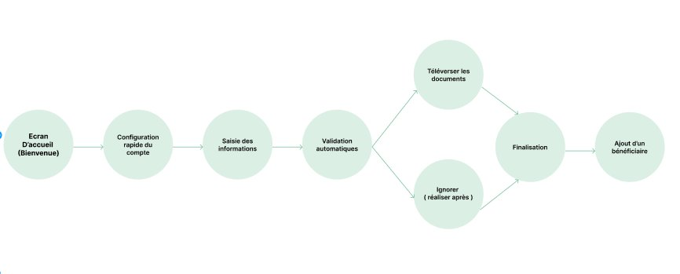
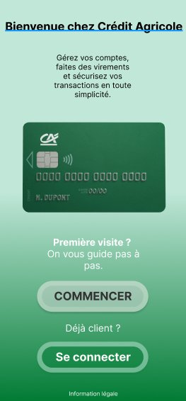
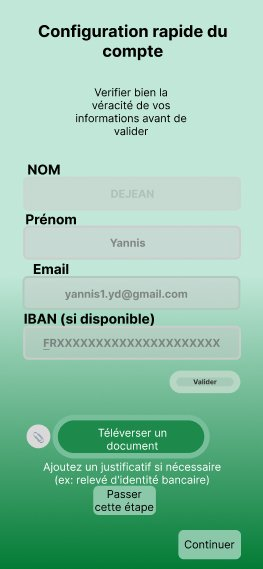
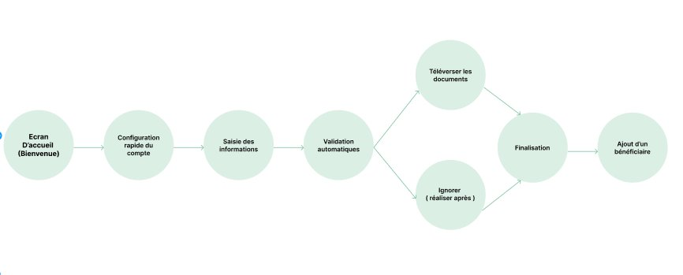
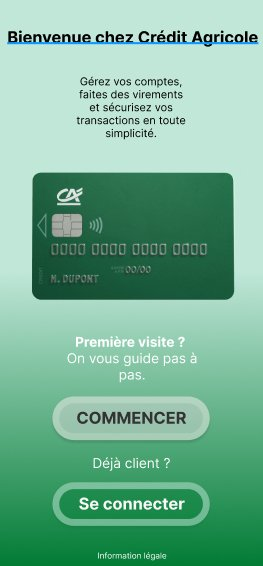
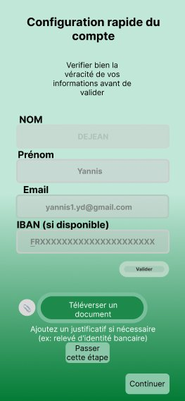
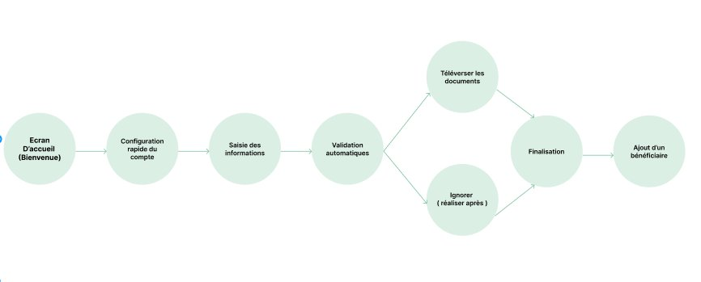
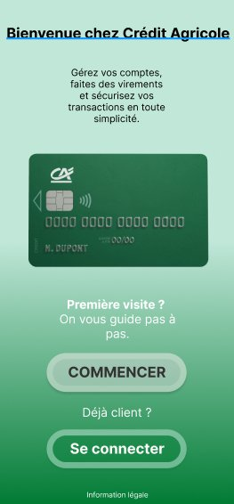
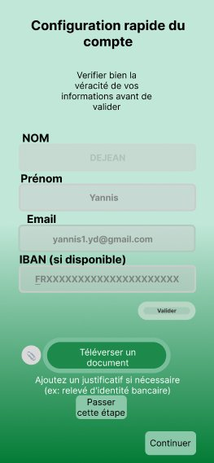
Voici quelques projets réalisés sur Figma pour mettre en pratique mes compétences en UX, UI, prototypage et accessibilité.
Refonte d’une application bancaire (2025)
Optimisation du parcours utilisateur pour l'inscription sur mobile. Wireframes, tests utilisateurs, accessibilité et clarté des étapes.
Voir le prototypeApplication de maintenance prédictive (2025)
Conception UX centrée technicien : simplification de l'interface, suivi d'interventions, visualisation des données.
Voir le prototypeDashboard marketing (2023)
Tableau de bord interactif pour la visualisation de KPIs marketing. Prototypage et tests utilisateurs.
Voir le designSite e-commerce Apex Velocity (2025)
Projet personnel autour de l’univers F1, avec un branding fort, une maquette mobile et desktop, un parcours utilisateur optimisé et une vraie logique e-commerce (scrolling, panier, fiche produit, etc.).
Voir le prototypeVoir en Dev Mode